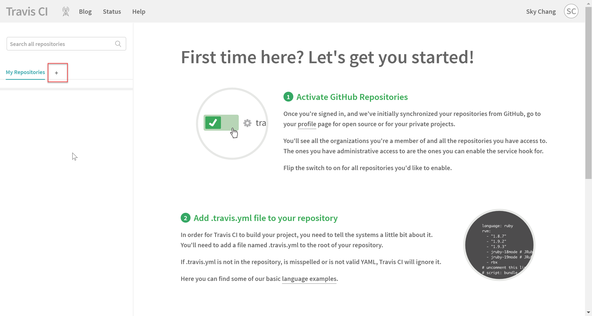
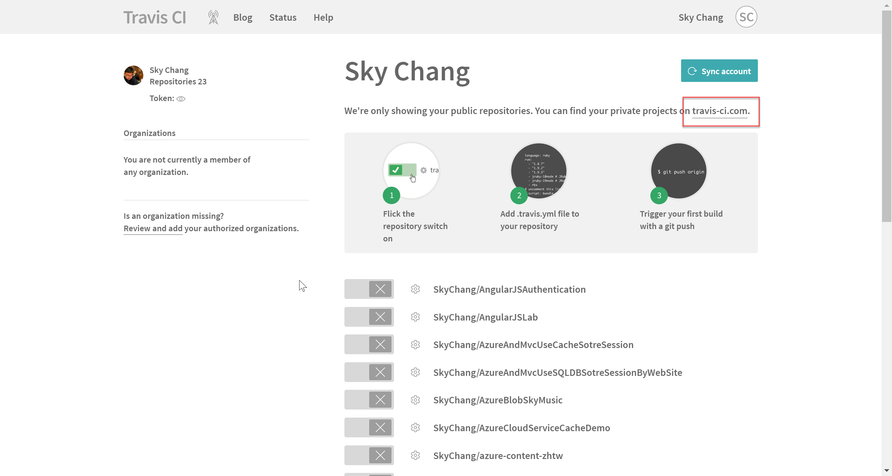
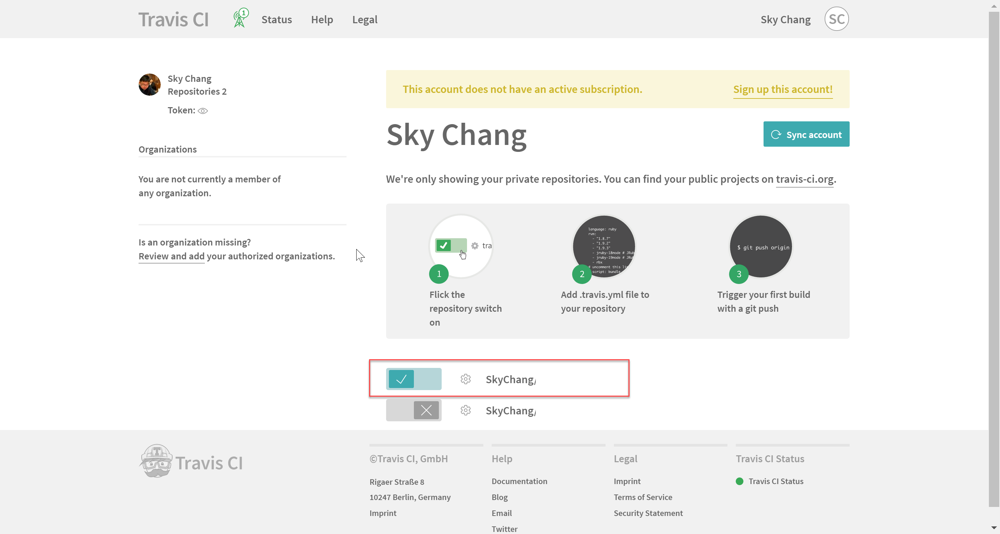
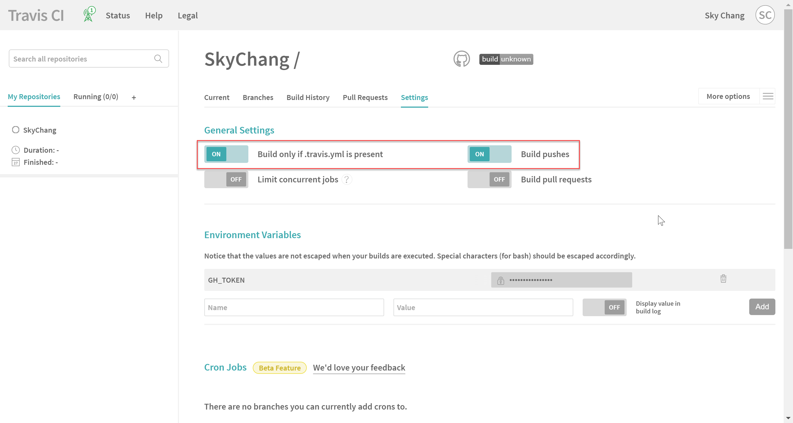
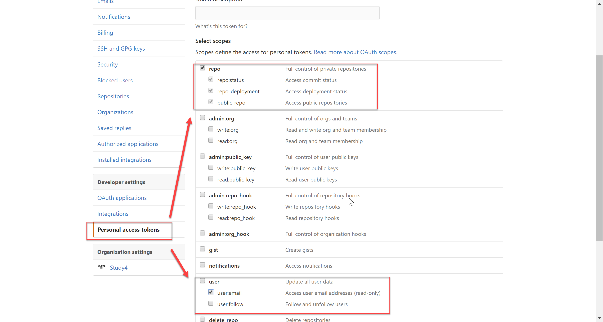
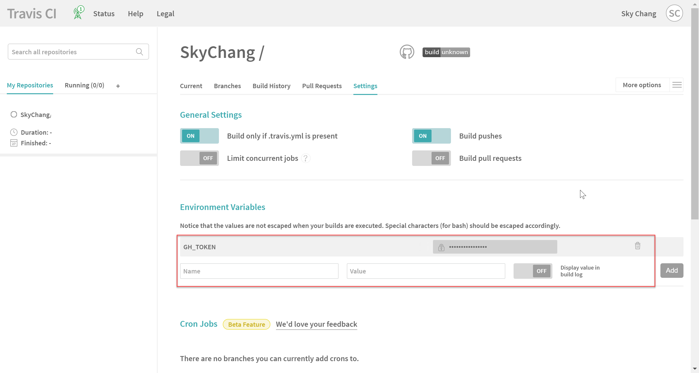

前言
新的一年，2017 又開始了，而回顧了舊的 2016 那一年，其實文章少的可憐到一個極致，在技術的道路上，
感覺去年也沒甚麼長進，所以在新的一年的第一天，除了陪家人走走外，大概就是要把今年重新撰寫 Blog 的目標重新定義一下，
這段時間，也嘗試了許多種讀書學習的方式，到最後，還是覺得寫文章最有效果阿!!!
當然，廢話不多說，有空再來寫一篇回顧文..既然這邊決定今年要重返 Blog 界，那自然第一篇就要和 Blog 有關係了。
在很久之前 ( 大概2015 ) 寫了幾篇 Hexo 的安裝與使用，隔了這一段時間，終於要讓他進入 CI 了，
當然，這部分的文章期使已經有非常非常多了，這次也參考了許多中文繁體與簡體前輩寫文的文章，有興趣可以看一下附錄，
但基於自己的興趣，還是把他列成屬於自己的一篇記錄文吧!
OK~讓我們開始吧!!
Travis CI
是的，這次我選用的是Travis CI，或許大家會想說，為何不用 VSTS，
其實也沒有甚麼特別的因素，純粹只是想試試看 Travis CI 而已…
而 Travis CI 是一個免費的 CI 工具，和 GitHub 也很契合，所以身為技術狂的人，這次我們就來嘗試看看吧。
(
備註 : 如果是使用於 Open Source 專案，也就是 Public Repo 則不用錢，如果是使用在 Private Repo 專案，則要 $$
所以過一陣子，搞不好真的要跳到 VSTS 去了..
)
環境
在開始前，我必須要說一下我自己的環境；在查了很多文章後，赫然發現，有許多的朋友，會把 GitHub Page 設為 Master，
( 其實 GitHub Page 也必須要為 Master )，而把尚未編譯的 MD 檔案，也是 Source ，放到同一個 Repo 裡面，
而用分支的方式切開.
當然，也不是說好或是不好，但小弟自己是習慣把 Source 放到 Private Repo 裡面，而 GitHub Page 則是放在 Public，
對小弟來說，這就像是在寫程式一般，放到 GitHub Page ，自然就是只提供已經編譯完的 HTML ，而 MD 還是放在 Private Repo 裡面。
所以，對小弟來說，小弟的環境，就是一個 Public Repo 放置編譯完後的 HTML。
而 Private Repo 則是放 MD。
故，有兩個 Repo，也因此，在設定的情況下，就會和目前網路上大部分的文章有些落差。
另外，小弟這邊也直接使用了 Hexo 的 hexo-deployer-git，因為原本我是直接透過指令佈署，
所以如果沒使用的朋友們，可以先進行 hexo-deployer-git 的設定。
設定
基本上，Travis CI 非常簡單，簡單到隨便按按就可以了!(疑)，總之，一開始就是使用 GitHub 進行登入。
也因為使用 GitHub 帳號進行登入，所以 Travis CI 也順便地和 GitHub 要一些權限，例如拿到 Repo 列表之類的。
完成之後，就會出現如下畫面；基本上如文章說的，只要三個步驟。
- 開啟開關
- 設定 travis.yml
- 觸發!!

實際上怎麼可能那麼單純 XDDD 。
接下來，進入下圖，我們可以看到，完全找不到 Private Repo 的專案，這也很正常，因為我們要進入另外一個網站。

進入 .com 的網站後，我們就可以找到 Private Repo 這個專案了，這時候，我們就可以輕鬆的啟動 Repo。

接下來，我們要如下圖，把底下這兩個選項啟動，
第一個 Build only if .travis.yml is present 代表著，只有擁有 .travis.yml 才會啟用 build，
而 Build pushes 則是表示當 push 的時候會被觸發。
另外，可以注意到最下面的 GH_TOKEN ，基本上，第一次進來是不會有這個的，這個是等下我們要進行設定的步驟。

回到 GitHub ，因為最後，我們要透過 Travis CI 把編譯成 HTML 的檔案，重新簽入且 Push 至 Public Repo，
所以這邊，我們要在 GitHub 網站設定 Personal access tokens ，並且把此 Token 提供給 Travis CI，
這樣 Travis CI 就可以擁有簽入 ( push 至 GitHub ) 的權限。
當然，除了 Personal access token 外，也可以直接使用 SSH 憑證的方式，
使用 SSH 憑證的方式，有一個好處是可以僅限定於某個 Repo，不過在 Travis CI 上的處理就會比較麻煩，
有興趣可以參考最底下的參考連結。
而 Personal access token 則會影響到所有 Repo，所以我們只提供最小的權限 ( 其實也不小了.. )。
設定完後，回拿到一組 Token ，請複製下來，離開後，就永遠看不到了 XDD

接下來，小心翼翼的拿著我們複製的 Token ，回到 Travis CI，並且貼於下圖，
並且將名稱命名為 GH_TOKEN ( 可以隨意命名 )，
完成後就會如下圖。

撰寫 travis.yml
接下來，我們只要在我們 MD source 的根目錄，加上一個 .travis.yml。
並且內容如下：
language : 的意思指的是這是哪一種語言，Hexo 基本上當然是 Node.js 嚕。
node_js : 代表要用哪一個版本。
script : 要執行的 script。
after_success : 完成後要執行的動作。
所以簡單的說，就是先 npm install ，還原所有的 hexo 套件，
並且使用 hexo cl ，先清除 cache。
接著，設定完 git 的 name 和 email。
並且使用 Linux 的 sed 指令來替換 _convig.yml 的佈署參數，而這邊，我們使用了 ${GH_TOKEN} 參數
( 感謝此篇文章的大大，於文章內提供此方法 )
最後一步，當然就是透過 hexo-deployer-git 進行佈署了。
1 | language: node_js |
完成後，我們可以 commit 一個新文章，並且 push ，基本上就會觸發了。
後記
基本上，雖然我們透過置換的方式，來將參數換成 Token ，但實際上，在 Travis CI 的 Log 裡面，
還是可以看到置換後的 Token，未來有機會再來嘗試看看加密的方式，看看能不能解決這塊問題。
參考資料
- http://notes.iissnan.com/2016/publishing-github-pages-with-travis-ci/
- http://www.jianshu.com/p/5e74046e7a0f
- http://www.jianshu.com/p/e22c13d85659
- https://levirve.github.io/2016/hexo-deploy-through-travisci/
- https://zespia.tw/blog/2015/01/21/continuous-deployment-to-github-with-travis/
- http://lotabout.me/2016/Hexo-Auto-Deploy-to-Github/
- https://docs.travis-ci.com/user/environment-variables/#Encrypted-Variables
- https://docs.travis-ci.com/user/private-dependencies/